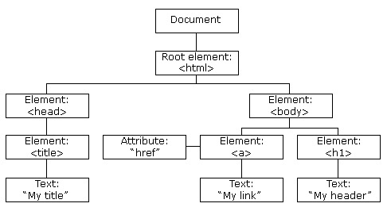

Javascript Session 2
Section 03.06 Break and Continue Statements
03.06. Break and Continue statement
breakandcontinuekeywords/statement can changehow the loop behavesbreakandcontinuekeywords can be used in all loops to stop or continue the loop- The
breakstatement is used to exit a loop early, to "jump out" of a loop, stops executing/running a loop - The
continuestatement tells the interpreter to immediately start the next iteration of the loop and skip the remaining code block
Syntax & Example
// break continue statement /* break */ let arrDays = ["Monday", "TuesDay", "Wednesday", "Thursday", "Friday", "Saturday", "Sunday"]; let i = 1; while (i <= 10) { if (i == 5) { break; } console.log(i); i++ } console.log('// ------------------------------'); for (let i = 0; i <= arrDays.length; i++) { if (i == 3) { break; } console.log(arrDays[i]); } console.log('// ------------------------------'); /* continue */ i = 1; while (i <= 20) { if (i % 2 == 0) { // console.log('Even Number ', i); i++; continue; // skip rest of the loop body i + 100; // not of use console.log('just in even num continue'); // not of use } console.log('Odd Number ', i); i++; } console.log('// ------------------------------'); for (i = 1; i <= 10; i++) { if (i === 5) { continue; // skip rest of the loop body console.log('just after 5 continue...'); // not of use } console.log(i); } console.log('// ------------------------------'); for(let int = 0; int < 10; int++) { if(int === 2) { console.log('2 is favorite EVEN number'); continue; } if(int === 5) { console.log('at 5 stop the loop'); break; } console.log('current Number is:', int); }
03.07. for each loop
03.07. for...each loop
Syntax & Example: ``
let arrDays = ["Monday", "TuesDay", "Wednesday", "Thursday", "Friday", "Saturday", "Sunday"]; arrDays.forEach(function(day)){ console.log(day); }
04.05. Objects in Javascript
04.05.01 Objects - An object in javascript is a variable that can have multiple attributes and methods. - Attributes of objects are values that represent different features of that class. - Methods of objects are actions that can be performed by the class using functions.
Syntax & Example Let us make an object to represent a person, we will begin with atributes of the person such as their name and age.
const person = { firstName: "Sheldon", lastName : "Cooper", age : 35 }; // We can view these atributes with the syntax variable_name.atribute_name console.log("The name of this person is: " + person.firstName + " " + person.lastName);We can also alter these atributes to update their values
console.log("Current age: " + person.age); person.age += 1; console.log("Current age: " + person.age);Javascript also allows us to add and remove atributes of a class
If we need to check if and object has a paticular atribute we can use the hasOwnProperty method which is inbuilt into all classes// We can add an atribute using the syntax variable_name.atribute_name = value person.iq = 187; console.log("Sheldon's iq: " + person.iq); // We can also delete these atributes using the delete keyword delete person.iq; // This line will now give us an error as the atribute has been deleted console.log("Sheldon's iq: " + person.iq);
console.log("Do we have this person's iq?\n" + person.hasOwnProperty("iq"));
- We can now add our own methods to our class using functions
const person = { firstName: "Sheldon", lastName : "Cooper", age : 35, greetPenny : function() { for (let i = 0; i < 3; i++) { console.log("Hey Penny!"); } } }; person.greetPenny(); // This calls the method greetPenny
Section 5. Conditions - Control Flow
- Conditional statements are used to perform different action based on different condition
- Conditional statements allow the developer to make correct decisions and perform right actions as per condition
- It helps to perform different actions for different decisions
- We can use conditional operator to check our condition: >, <, >=, <=, ==, !=, ===
We can use the following conditional statements in JavaScript to make decisions:
- If Statement
- If...else Statement
- If...else if...else Statement
- Switch...Case Statement
05.01. The if statement
The if statement and comparison operators
- If the conditional statement is the simplest and basic control statement make decisions and execute statements conditionally
- The if statement is used to execute a block of code
only if the specified condition evaluates to true - It evaluates the content only
if an expression is true
If conditional statements are used to evaluate some kind of condition and do something/perform some actions based on the result
Note:
Useifto specify a block of code to be executed,if a specified condition is trueSyntax & Example
// if conditional statement /*if(condition/expression) { // Code to be executed if condition/expression is true } */ let user = 'Sheldon'; if (user == 'Sheldon') { console.log('Welcome Sheldon!'); window.alert('Welcome Sheldon!'); } if (user == 'Sheldon') { console.log('Welcome Authorised User: ' + user + '!'); window.alert('Welcome Authorised User: ' + user + '!'); } // ------------------------------ let age = 20; if (age >= 18) { console.log('MAJOR! Eligible for Voting'); window.alert('MAJOR! Eligible for Voting'); } // ------------------------------ let currentHours = 10; if(currentHours < 12) { console.log('Good Morning!'); window.alert('Good Morning!'); } if(currentHours >=6 && currentHours < 12) { console.log('Good Morning!'); window.alert('Good Morning!'); }
05.02. The if else statement
- The JavaScript
if...else statementis used to execute the codeweather condition is true or false - The developer can enhance the decision-making capabilities by providing an alternative choice through adding an
elsestatement to theifstatement - The condition can be any expression that evaluates to true or false
- If the condition evaluates to true, statements_1 are executed; otherwise, statements_2 are executed
Note:
Useelseto specify a block of code to be executed,if the same condition is falseSyntax & Example
// if...else conditional statement /*if(condition/expression){ // content to be executed if condition is true - statements_1 } else{ // content to be executed if condition is false - statements_2 }*/ let user = 'Ambar'; if (user == 'Sheldon') { console.log('Welcome Sheldon!'); window.alert('Welcome Sheldon!'); } else { console.log('Welcome Guest!'); window.alert('Welcome Guest!'); } // ------------------------------ let age = 15; if (age >= 18) { console.log('MAJOR! Eligible for Voting'); window.alert('MAJOR! Eligible for Voting'); } else { console.log('MINOR! NOT Eligible for Voting'); window.alert('MINOR! NOT Eligible for Voting'); } // ------------------------------ let currentHours = 10; if(currentHours < 12) { console.log('Good Morning!'); window.alert('Good Morning!'); } else { console.log('Good Evening!'); window.alert('Good Evening!'); }
05.03. The if else if else statement
- The
if...else if...elsea special statement that is used tocombine multiple if...else statements - It is an advanced form of if...else that allows us to
make a correct decision out of several conditions
Note:
Useelse ifto specify a new condition to test,if the first condition is falseSyntax & Example
// If...else if...else conditional statement /*if(condition/expression 1) { // Code to be executed if condition1 is true statements_1 } else if(condition/expression 2) { // Code to be executed if the condition1 is false and condition2 is true statements_2 } else { // Code to be executed if both condition1 and condition2 are false statements_3 }*/ let num1 = 200; let num2 = 100; if (num1 == num2) { console.log('Both numbers are equal'); } else if (num1 < num2 ) { console.log('Number2 is greater!'); } else { console.log('Number1 is greater!'); } // ------------------------------ let age = 15; if (age >= 60) { console.log('SINIOR CIRIZEN!'); } else if (age < 18) { console.log('MINOR!'); } else { console.log('MAJOR - Middle Age!'); } // ------------------------------ let currentHours = 15; if(currentHours >=6 && currentHours< 12) { console.log('Good Morning!'); window.alert('Good Morning!'); } else if (currentHours >12 && currentHours <=18) { console.log('Good AfterNoon!'); window.alert('Good AfterNoon!'); } else { console.log('Good Evening!'); window.alert('Good Evening!'); }
05.04. The switch case statement
- The switch...case statement is alternative to an if...else if...else statement, both do almost the same thing
- This matches the
caseand thevalue of conditionand if the case matches, the subsequent block is executed and if none of the case matchesdefault blockis executed - The JavaScript switch statement is used to execute one code from multiple blocks of expressions
Note:
Useswitchto specify manyalternative blocks of code to be executedSyntax & Example
// switch...case conditional statement /* switch(variable/expression){ case value1: // Code to be executed if variable/expression === value1 break; case value2: // Code to be executed if variable/expression === value2 break; default: // Code to be executed if variable/expression is different from all values } */ let grade = 'B'; // A.B,C, or something switch (grade) { case 'A': console.log('Great Job! - A Grade'); break; case 'B': console.log('Good! - B Grade'); break; case 'C': console.log('Congratulations! - Passed'); break; default: console.log('Sorry! - Failed...Keep trying!'); break; } // ------------------------------
let sweets = ''; //cake, chocolates, biscuits
switch (sweets) {
case 'chocolates':
console.log('Chubby Chocolates!');
break;
case 'cake':
console.log('Happy BirthDay Cake!');
break;
case 'biscuits':
console.log('Enjoy Biscuits!');
break;
default:
console.log('No Sweets! Try some other sweets!');
break;
}
const color = 'red';
switch(color) {
case 'red':
console.log('The Dark RED');
break;
case 'green':
console.log('Go Green');
break;
case 'blue':
console.log('Boys are Blue');
break;
case 'yellow':
console.log('Golden Yellow');
break;
default:
console.log('Its some other Color, Enter correct color');
break;
}
let currentDate = new Date();
let currentDay;
switch(currentDate.getDay()) {
case 0:
currentDay = 'Sunday';
break;
case 1:
currentDay = 'Monday';
break;
case 2:
currentDay = 'Tuesday';
break;
case 3:
currentDay = 'Wednesday';
break;
case 4:
currentDay = 'Thursday';
break;
case 5:
currentDay = 'Friday';
break;
case 6:
currentDay = 'Saturday';
break;
}
console.log(`Today is ${currentDay}!`);

05.05 Lookup Tables
In javascript, we can use objects to create a lookup or mapping between different values. A lookup is a variable that maps an input value to a paticular output value.
// This is a lookup table that maps names to mobile numbers
var mobile_number_lookup = {"Penny":58538902, "Raj" : 98745689, "Sheldon" : 789023456};
// To get the corresponding mobile number from a name we use the syntax variable[input value]
console.log("Raj's number is: ", mobile_number_lookup["Raj");
If we want to prevent our object or lookuptable from having any future changes, we make use of the Object.freeze function.
const person = { firstName: "Sheldon", lastName : "Cooper", age : 35 }; // We can chage atributes like normal person.age = 37; console.log(person.age); // We now freeze to prevent future changes Object.freeze(person); // This will not take effect since this object is now frozen person.age = 35; console.log(person.age);
06. Regular Expressions (RegEx) in Javascript
Regular Expressions is a type of format for strings that allows you to easily find and replace characters as you like.
06.01 Search
The search method allows us to get the index of the substring in the text. Note that this search is regardless of case sensitivity.
var text = "Big Bang Theory";
console.log(text.search(/Theory/i));
06.02 Replace
The replace method allows us to replace a substring with any string of our choice.
var text = "Big Bang Theory";
console.log(text.replace(/Big/i, "Massive"));
06.03 The Test Method
This checks if the substring contains a string that meets the following criteria.
var expression = /Season 1/ // this expression will return true for all strings with the term Season 1 console.log(expression.test("Season 1 Episode 12")); console.log(expression.test("Season 2 Episode 12"));
06.04 The | Operator
This operator searches for any of the alternatives provided by the user
06.05 The Match Functionvar expression = /Season 1|Season 2/g // this expression will return true for all strings with Season 1 or Season 2 console.log(expression.test("Season 1 Episode 12")); console.log(expression.test("Season 2 Episode 12")); console.log(expression.test("Season 3 Episode 12"));
This returns all instances where a substring matching the regex expression is found.
var text = "Big Bang Theory"; console.log(text.match(/Big/g));
06.06 RegEx Wildcards
Wildcards are placeholders that can represent multiple characters in a string.
- \d represents numbers
- \s represents whitespace
- \b represents the beginning of a word
- * represents zero or more whitespaces
- \A represents the start of a string
- [a-z | A-z] can represent any character
var expression = /[a-z | A-z]/g // checks if the string contains an alphabet console.log(expression.test("a")); console.log(expression.test("xy")); console.log(expression.test("1"));
Section 7. promise
7.01. What is a promise?
Why is a JavaScript ES6 promise called a 'promise'? Here is a snippet from the Oxford Dictionary of English definition of 'promise':
promise |ˈprɒmɪs|
noun
1 a declaration or assurance that one will do something or that a particular thing will happen
This pretty well sums up what a promise means in JavaScript: something that will be delivered in the future (if and when the promise is fulfilled).
Traditionally, callbacks are used as a way to receive the data that is delivered asynchronously (meaning that the data is not likely to be available at the time it is requested but can be expected some time later). Using callbacks can quickly become unwieldy when dealing with many asynchronous events (e.g., ajax calls), especially when they depend on each other (google for callback hell).
JavaScript ES6 introduces promises as a better alternative for callbacks when dealing with asynchronous events.
We can state a number of simple facts about ES6 promises:
- A promise is a JavaScript object (
typeof somePromise === 'object') that serves as a placeholder for a (future) value. - Because a promise is an ordinary JavaScript object you can pass it around as an argument to a function, return it from a function, assign it to a variable, push it to an array, etc.
- You can receive the 'promised' value by calling the
.then()method of the promise, passing it a function that will receive that value as its argument as soon as it is available. - You can create a promise by calling the ES6
Promiseconstructor function withnew(see Listing 1 below), then callresolve()when results are ready orreject()on detecting an error. - Sometimes you can get a ready-made promise by calling an appropriate API or library function, like the
fetch()Web API function in Listing 1. - Internally, a promise can be in one of three states:
- pending: the asynchronous result is still awaiting delivery
- fulfilled: the asynchronous result has been delivered and is available (
resolve()was called) - rejected: an error was encountered: the promise could not be fulfilled (
reject()was called) - A promise that is no longer pending because it was either fulfilled or rejected is said to be settled.
- A promise that is settled has reached its final state. Its state and value can no longer be changed. It has become immutable. Subsequently calling
resolve()orreject()does no longer affect the outcome of the promise.
Example code
Listing 1 shows an example based on an asynchronous XMLHttpRequest that we will use throughout the rest of this discussion.
'use strict';
function fetchJSON(url) {
return new Promise((resolve, reject) => {
const xhr = new XMLHttpRequest();
xhr.open('GET', url);
xhr.responseType = 'json';
xhr.onreadystatechange = () => {
if (xhr.readyState === 4) {
if (xhr.status < 400) {
resolve(xhr.response);
} else {
reject(new Error(xhr.statusText));
}
}
};
xhr.send();
});
}
// alternative:
// const fetchJSON = url => fetch(url).then(res => res.json());
const url = 'http://api.nobelprize.org/v1/laureate.json?gender=female';
fetchJSON(url)
.then(data => renderData(data))
.catch(err => renderError(err));
function renderData(data) {
console.log(data);
}
function renderError(err) {
console.error(err.message);
}
Listing 1. Asynchronous XMLHttpRequest (and fetch alternative) using a promise.
The fetchJSON() function in Listing 1 returns a promise that resolves to a value converted from JSON data received from a remote API end point. The alternative version of fetchJSON() (commented out here) uses a more modern browser function that natively returns a promise.
7.02. The .then() method
A promise exposes a .then() method through which you can obtain its fulfilled value or an error value in the case the promise was rejected:
somePromise.then(onFulfilled, onRejected);
The .then() method takes as its parameters two optional functions, the first one dealing with the 'happy' scenario (the promise is fulfilled) and the second one dealing with the error case (the promise is rejected). If you are only interested in the success case you can leave out the second parameter:
somePromise.then(data => {
// ...
});
If you are only interested in the error case, you can pass null for the first argument:
somePromise.then(null, err => {
//...
});
or you can use another method available on a promise, .catch(), which is just a shorthand for calling then() with null as its first argument:
somePromise
.then(data => {
// ...
})
.catch(err => {
// ...
});
Note that the onFulfilled and onRejected handler functions always execute asynchronously. When the promise is settled, the onFulFilled or onRejected handler is placed on the event/callback queue. They execute when the currently executing JavaScript code runs to completion, causing the call stack to become empty and enabling the event loop to process the next event from the queue. This holds true even if the promise is immediately fulfilled or rejected, as in this example:
Promise.resolve(42)
.then(data => console.log(data));
console.log('after promise');
// console output:
// after promise
// 42
This example also shows how you can create a promise that is immediately resolved. There is no need to use new or to pass a (resolve, reject) => {} function to the Promise constructor. Similarly you can create a promise that is immediately rejected:
Promise.reject(new Error('oops'))
.catch(err => console.log(err.message));
console.log('after promise');
// console output:
// after promise
// oops
7.03 Promise chaining
It is important to understand that the .then() method returns a new promise that resolves to the return value of onFulfilled (if specified) in case of the 'happy' scenario or the return value of onRejected() (if specified) in case of an error. If the return value of these functions is a plain JavaScript value, the new promise is immediately fulfilled with that value. If the return value is yet another promise then the outcome is determined by the inner promise, once settled. If the function does not return a value, the new promise is immediately fulfilled with the value undefined.
Because .then() (and .catch) return new promises, you can chain them together such that your code can be read as: do this, then do that and then that, etc.:
function fetchAndRender(url, otherUrl) {
fetchJSON(url)
.then(data => {
renderData(data);
return fetchJSON(otherUrl);
})
.then(otherData => {
renderOtherData(otherData);
})
.catch(err => {
renderError(err);
});
}
fetchAndRender();
Listing 2. Chaining of then and catch
Let's examine Listing 2 in a bit more detail. There two calls to fetchJSON(). Errors are handled in one place, by means of the .catch() method that terminates the promise "chain".
If you embed another promise inside the function that you pass to the .then() method (in Listing 2 this is done in the first .then()) you should return that promise as the function's return value. If you don't return the promise, there is no way for the .catch() at the end of the chain to "see" a reject() of the inner promise, leaving the rejection unhandled.
In case a promise in the chain is rejected due to some error, the promise chain will be traversed until an onRejected handler (e.g., in a terminating .catch() method) is found. All intermediate onFulfilled handlers (e.g. .then()) will be skipped.
Handling errors at the end of a promise chain is a major advantage over the repetition of error handling code in the case of callbacks.
Note however that a .catch() method does not necessarily have to be the last method in the chain. It can be used to handle errors midway. As mentioned previously, the .catch() method returns a new promise which can be used to provide some "fallback" value in case of errors.
In the example below a promise is created that is immediately rejected. The promise is subsequently "consumed" twice.
-
In the first case ('consumer 1'), the rejection is caught by a
.catch()method and the rejection value'bad'is printed on the console. -
In the second case ('consumer 2'), the rejection is also caught by a
.catch()method, but now the catch handler completely ignores the rejection value and just returns the fallback value'good.. This becomes the fulfilled value of the promise returned by.catch(). The next.then()in the chain, completely oblivious that an error ever occurred, now prints the fulfilled value'good'on the console.
const promise = Promise.reject('bad');
// consumer 1
promise
.catch(console.log); // -> "bad"
// consumer 2
promise
.catch(() => 'good')
.then(console.log); // -> "good"
7.04 Promise.all()
There may be situations where you want to execute multiple promises in parallel and wait until all promises are resolved. Of course, these promises must not be interdependent (i.e. a promise must not depend on the result of another promise running in parallel). The Promise.all() method accepts an array (or more precisely, an iterable) of promises. It return a new promise that is resolved when all promises in the array are resolved, or rejected as soon as one of the promises in the array is rejected.
The fulfilled value of the new promise is an array of fulfilled values of the individual promises passed to Promise.all(), in the same order.
Section 8. DOM (Document Object Manager)
DOM is a system which allows javascript to interact with the html of a webpage. The elements are stored in a type of tree structure that represents the HTML format. Below we can see a visualization of what this looks like.

As we can see, the tree begins with an element called document. This is actually an inbuilt object that javascript gives us. It serves as a starting point from which we can access it's many methods and attributes that allow us to interact with the webpage.
8.01 Finding Elements using DOM
To find an element using DOM, we need an identifier to understand which element we are looking for. Below are examples of HTML and javascript code using different identifiers. First see what the raw html looks like in codepen and then add the javascript later to see the difference.
8.01.01 Id of an HTML tag
Html code
<html>
<body>
<p id="demo"> Who is smart?</p>
</body>
</html>
document.getElementById("demo").innerHTML = "Sheldon is smart!";
8.01.02 Name of an HTML tag
Html code
<html>
<body>
<p id="demo"> Who is smart?</p>
</body>
</html>
const element = document.getElementsByTagName("p");
document.getElementById("demo").innerHTML = 'The question is: ' + element[0].innerHTML;
8.01.03 Name of a Class Name
Html code
<html>
<body>
<p class="intro"> Who is smart?</p>
</body>
</html>
const element = document.getElementsByClassName("intro");
document.getElementById("demo").innerHTML = 'The question is: ' + element[0].innerHTML;
8.02 Writing information from javascript to html
In some cases we might want javascript to simply paste information onto the page. For this we can use the document.write() function.
<html>
<body>
<p>The date and time is</p>
<script>
document.write(Date()); // Date() returns the current date and time
</script>
</body>
</html>
8.03 Altering CSS using javascript
We use the .style attribute of the document object to edit the css code. Here we take the following steps to change the color of the text
- Get the HTML tag using document.getElementById
- Get the CSS of this tag from the style attribute.
- In the CSS attribute get the color attribute.
- Set this value to "green".
HTML code
<html>
<body>
<p id="p2">This text can change color.</p>
</body>
</html>
document.getElementById("p2").style.color = "green";
8.04 Using DOM to dynamically alter html
Changing simple text using DOM is well and good, but how can we use the more powerful aspects of JS such as loops to edit HTML in a dynamic way? To demonstrate this type of behavior we will show you some simple code to use a loop that constantly moves a paragraph across the screen.
HTML code
<html>
<body>
<p id="p3" style = "position: absolute;top : 100px;">This text is moving across the screen.</p>
</body>
</html>
JS code The setTimeout function is a simple function that waits a set amount of milliseconds before executing some code. If we run this with i * 10 timeout the it will wait in intervals of 0, 10, 20 and so on before executing the code. This will allow us to see the text move across the screen instead of the loop running faster than we can comprehend it.
for (let i = 0; i < 1000; i += 0.5) {
setTimeout(function () {
document.getElementById("p3").style.left = i + "px";
}, i * 100);
}
Section 9. Project
Click here for a simple project made by the concepts we learnt till now. Try making more!!